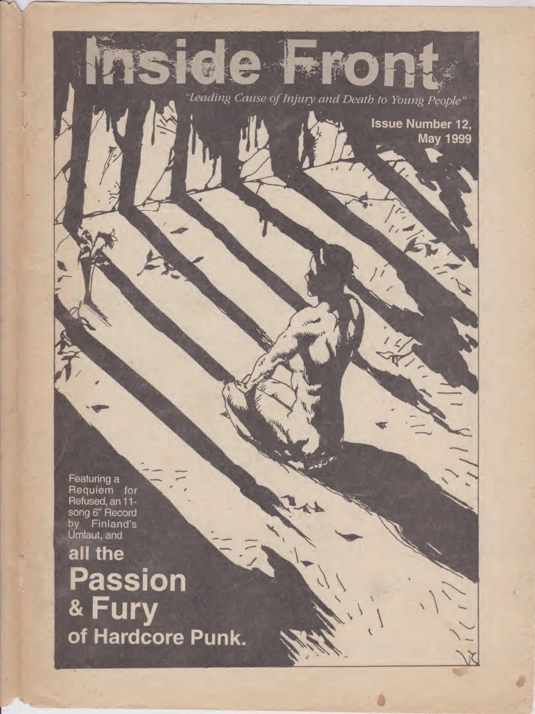
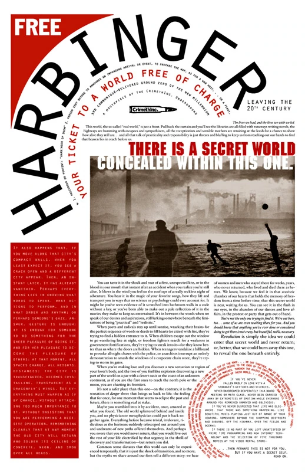
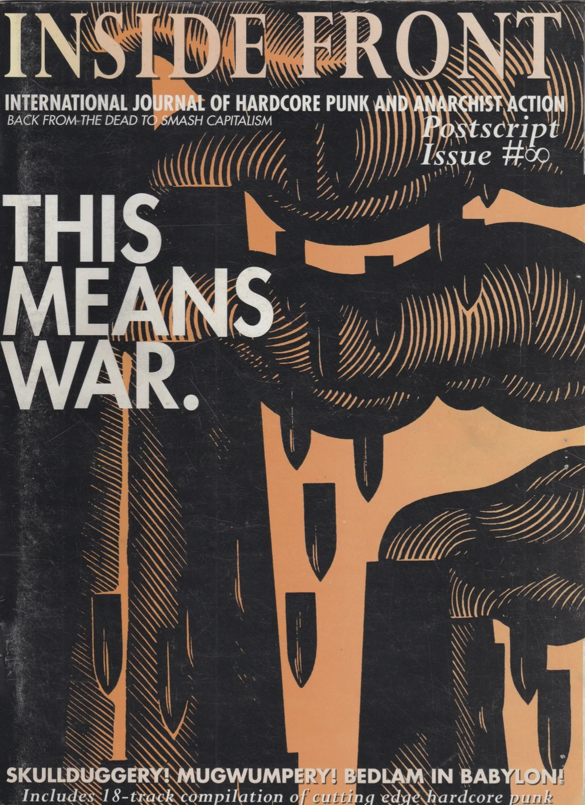

見どころ
人影がつくる長い斜線を表紙いっぱいに配した。スウェーデンのRefusedやブラジルのPoint of No Returnに取材し、別々の土地で活動するバンドを一冊のジンで結んでいる。
作品・制作の例7件を紹介しています。実作品画像4点、参照・関連画像0点。画像の収集は継続中です。
音楽・出版・服などに広がる文化と制作の姿勢
Punk / DIY
好きな音楽を伝える雑誌を、自分で書いて配る。パンクのDIY（ディー・アイ・ワイ）は、専門家や大きな会社だけに任せず、自分たちでつくって発表しようとする姿勢です。紙の切り貼りや手描きの文字は、その方法の一部でした。
実作品を見る

画像を表示できませんでした。下の出典ページで確認できます。
Inside Front 編集部／CrimethInc. / 1999年5月
人影がつくる長い斜線を表紙いっぱいに配した。スウェーデンのRefusedやブラジルのPoint of No Returnに取材し、別々の土地で活動するバンドを一冊のジンで結んでいる。
Inside Front 編集部／CrimethInc.／表紙図版提供 CrimethInc.
出典で作品・資料を見る ↗実作品を見る

画像を表示できませんでした。下の出典ページで確認できます。
CrimethInc. / 2000年
大きな誌名が弧を描き、左上には赤地に白で「FREE」とある。パンクの自主出版から生まれた編集集団が、無料で手渡せる新聞に活動を広げた例。写真の上下には小さな本文も組まれている。
CrimethInc.／表紙図版提供 CrimethInc.
出典で作品・資料を見る ↗実作品を見る
画像を表示できませんでした。下の出典ページで確認できます。
CrimethInc. Workers’ Collective / 2000年初刷、2001年版
人物と山の風景が写る写真を背景に、赤い題名を表紙の長辺に沿って置いた。パンクのジンを手がけた集団の最初の本で、音楽誌『Slug & Lettuce』では文章と挿絵を対等に扱う紙面が紹介された。
CrimethInc. Workers’ Collective／表紙図版提供 CrimethInc.
出典で作品・資料を見る ↗実作品を見る

画像を表示できませんでした。下の出典ページで確認できます。
Inside Front 編集部／CrimethInc. / 2003年春
黒い工場のシルエットを橙色の空に重ね、白い太字の見出しを左に置いた号。TragedyやLackへの取材を収録し、誌面と同時に複数のバンドの演奏を聴けるCDを届けた。
Inside Front 編集部／CrimethInc.／表紙図版提供 CrimethInc.
出典で作品・資料を見る ↗自主制作雑誌
タイプライターとペンで始めた音楽誌。見る人が自ら発信するディー・アイ・ワイ（自分でつくる姿勢）の例。
作品・資料の出典を見る ↗作品名（出典表記）：Sniffin’ Glue（スニッフィン・グルー）
Mark Perry（マーク・ペリー。編集・創刊） / 1976–1977 / 自主制作雑誌
レコード包装
公式の肖像写真に別の言葉を重ね、元の意味を問い直す例。
作品・資料の出典を見る ↗作品名（出典表記）：God Save the Queen レコード・スリーブ
Jamie Reid（ジェイミー・リード）、元の写真：Peter Grugeon（ピーター・グルージョン） / 1977 / レコード包装
服
同じ音楽文化の表現が紙を離れ、身につけるものへ広がる例。
作品・資料の出典を見る ↗作品名（出典表記）：God Save the Queen Tシャツ
Vivienne Westwood（ヴィヴィアン・ウエストウッド）、Malcolm McLaren（マルコム・マクラーレン）、Jamie Reid（ジェイミー・リード） / 1977 / 服
ハードコア・パンクの自主制作誌、150ページ
人影がつくる長い斜線を表紙いっぱいに配した。スウェーデンのRefusedやブラジルのPoint of No Returnに取材し、別々の土地で活動するバンドを一冊のジンで結んでいる。
作品・資料の出典を見る ↗原題：Inside Front #12
Inside Front 編集部／CrimethInc. / 1999年5月 / ハードコア・パンクの自主制作誌、150ページ
無料配布のタブロイド紙、14ページ
大きな誌名が弧を描き、左上には赤地に白で「FREE」とある。パンクの自主出版から生まれた編集集団が、無料で手渡せる新聞に活動を広げた例。写真の上下には小さな本文も組まれている。
作品・資料の出典を見る ↗原題：Harbinger 3: The Propaganda of Desire
CrimethInc. / 2000年 / 無料配布のタブロイド紙、14ページ
自主出版の単行本
人物と山の風景が写る写真を背景に、赤い題名を表紙の長辺に沿って置いた。パンクのジンを手がけた集団の最初の本で、音楽誌『Slug & Lettuce』では文章と挿絵を対等に扱う紙面が紹介された。
作品・資料の出典を見る ↗原題：Days of War, Nights of Love: Crimethink for Beginners
CrimethInc. Workers’ Collective / 2000年初刷、2001年版 / 自主出版の単行本
ハードコア・パンクの自主制作誌、196ページ、コンピレーションCD付
黒い工場のシルエットを橙色の空に重ね、白い太字の見出しを左に置いた号。TragedyやLackへの取材を収録し、誌面と同時に複数のバンドの演奏を聴けるCDを届けた。
作品・資料の出典を見る ↗原題：Inside Front Reunion Issue
Inside Front 編集部／CrimethInc. / 2003年春 / ハードコア・パンクの自主制作誌、196ページ、コンピレーションCD付
ジンは、個人や小さな集まりがつくる冊子です。マーク・ペリーは1976年に『スニッフィン・グルー』を始めました。一方、ジェイミー・リードのレコード用デザインは、音楽を売る仕事でもありました。パンクの印刷物をすべて、同じ規模の自主制作だとは考えません。
白黒のコピーも、強い色の印刷もあります。低い予算と選んだ色の関係は、個別の制作記録で確かめます。
切り抜いた文字や手書きの文字では、大きさや傾きがそろわないことがあります。それが声の強さをどう伝えるか考えます。
コラージュは、紙や写真などを切り貼りして、新しい絵をつくる方法です。もとの写真の意味が、組み合わせによってどう変わるかを見ます。
整えるだけでなく、かぶせる、消す、ずらす操作にも注目します。ただし、荒く見えるから無計画だったとは限りません。
サイケデリックなポスターと同じく音楽に関わりますが、DIYは色や形の名前ではありません。誰が制作し、印刷し、配るかという仕組みを含みます。
紙を切り、手書きの見出しを貼って、小さなお知らせをつくってみましょう。自分の言葉で発信することと、他人の写真を無断で使うことは別です。
作り手が発行したジンの表紙や紙面から、手に入る道具で文字と写真を組み合わせ、読者に届けた方法をたどります。
作品・制作の例7件を紹介しています。実作品画像4点、参照・関連画像0点。画像の収集は継続中です。